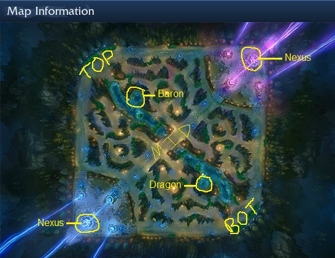

League of Legends is an multiplayer online battle arena (MOBA) style game, which pits two teams of 5 players against each other. The players on each team each pick champions from a large roster of characters, and utilize the abilities of their champion to help their team assault the enemy base. This map that the teams play on is divided into three lanes: top, middle and bottom lanes, with a jungle in between the top-middle and bottom-middle sections.
As you can see in the map, there are two bases, one blue and the other purple. The main objective of the game is to advance your team from your base into the heart of the enemy base and destroy their nexus crystal. While doing this you want to maintain control of two important objectives along the river, the Baron and Dragon. The small blue dots you see along the lanes are turrets, which are powerful structures meant to defend your lanes against the enemy. The three structures in each base that emit the columns of light are called inhibitors. They increase the power of your army by making your minions stronger, which allows you to push further into enemy territory. All this may seem overwhelming at first, but hopefully it will all become clear after your view this guide in its entirety.
If you're reading this guide, it's because you want to learn how to increase your presence in the middle lane. But before we can jump into that, there's some important information that we need to go over first. I want to explain some important mechanics and terms in the game that you'll need to know for the purposes of this guide.
The first thing you should learn about are the champions roles!.
Next{kind=link}